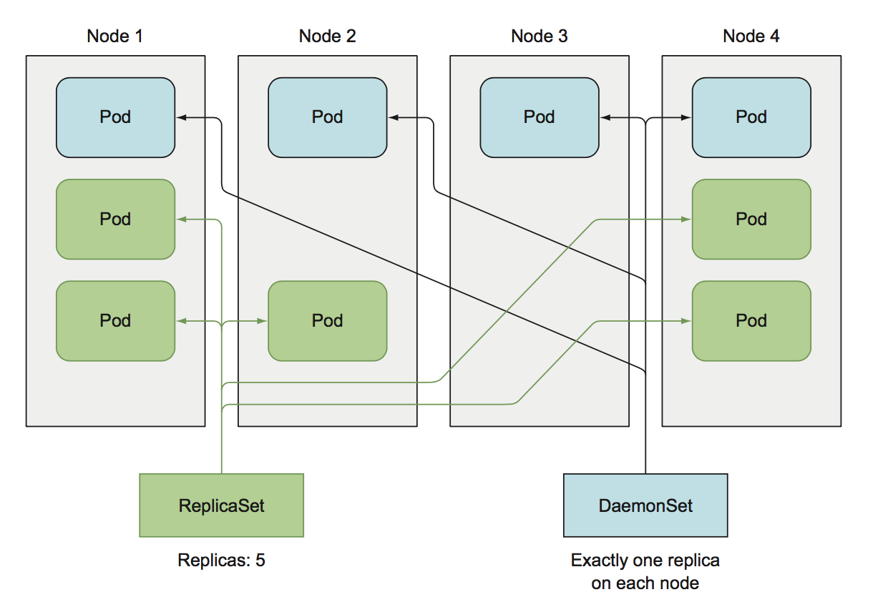

daemonset
DaemonSet 可以保证集群中所有的或者部分的节点都能够运行同一份 Pod 副本，每当有新的节点被加入到集群时，Pod 就会在目标的节点上启动，如果节点被从集群中剔除，节点上的 Pod 也会被垃圾收集器清除；DaemonSet 的作用就像是计算机中的守护进程，它能够运行集群存储、日志收集和监控等守护进程，这些服务一般是集群中必备的基础服务。 
创建 daemonset
创建一个 ssd 健康检查的daemonset；
#ssd-monitor-daemonset.yaml
apiVersion: apps/v1beta2
kind: DaemonSet
metadata:
name: ssd-monitor
spec:
selector:
matchLabels:
app: ssd-monitor
template:
metadata:
labels:
app: ssd-monitor
spec:
nodeSelector:
k8s.51reboot.com/disk: ssd
containers:
- name: main
image: luksa/ssd-monitor
imagePullPolicy: IfNotPresent
重点说明spec.spec.nodeSelector 字段： 默认情况下，DaemonSet 将 pod部署到集群中的所有节点， 除非特殊指定 nodeSelector 字段来选择特定node的部署。
创建该 daemonset：
kubectl create -f ssd-monitor-daemonset.yaml
# kubectl get ds -owide
NAME DESIRED CURRENT READY UP-TO-DATE AVAILABLE NODE SELECTOR AGE CONTAINERS IMAGES SELECTOR
ssd-monitor 0 0 0 0 0 k8s.51reboot.com/disk 10s main luksa/ssd-monitor app=ssd-monitor
此时你会发现找不到pod, DESIRED 为0， CURRENT 为0，为什么呢？ 答案是需要给宿主打 "k8s.51reboot.com/disk" 的标签；
# kubectl get node --show-labels
NAME STATUS ROLES AGE VERSION LABELS
192.168.10.242 Ready <none> 35d v1.12.0-rc.2 beta.kubernetes.io/arch=amd64,beta.kubernetes.io/os=linux,kubernetes.io/hostname=192.168.10.242
192.168.10.243 Ready <none> 20d v1.11.6 beta.kubernetes.io/arch=amd64,beta.kubernetes.io/os=linux,kubernetes.io/hostname=192.168.10.243
# kubectl label nodes 192.168.10.243 k8s.51reboot.com/disk=ssd
node/192.168.10.243 labeled
# kubectl get node --show-labels
NAME STATUS ROLES AGE VERSION LABELS
192.168.10.242 Ready <none> 35d v1.12.0-rc.2 beta.kubernetes.io/arch=amd64,beta.kubernetes.io/os=linux,kubernetes.io/hostname=192.168.10.242
192.168.10.243 Ready <none> 20d v1.11.6 beta.kubernetes.io/arch=amd64,beta.kubernetes.io/os=linux,k8s.51reboot.com/disk=ssd,kubernetes.io/hostname=192.168.10.243
# kubectl get ds -owide
NAME DESIRED CURRENT READY UP-TO-DATE AVAILABLE NODE SELECTOR AGE CONTAINERS IMAGES SELECTOR
ssd-monitor 1 1 1 1 1 k8s.51reboot.com/disk=ssd 3m27s main luksa/ssd-monitor app=ssd-monitor
删除节点标签
下面把 node 192.168.10.243 的标签删除，看daemonset 的 pod是否受到影响，比如：
# kubectl label nodes 192.168.10.243 k8s.51reboot.com/disk-
node/192.168.10.243 labeled
# kubectl get node --show-labels
NAME STATUS ROLES AGE VERSION LABELS
192.168.10.242 Ready <none> 35d v1.12.0-rc.2 beta.kubernetes.io/arch=amd64,beta.kubernetes.io/os=linux,kubernetes.io/hostname=192.168.10.242
192.168.10.243 Ready <none> 20d v1.11.6 beta.kubernetes.io/arch=amd64,beta.kubernetes.io/os=linux,kubernetes.io/hostname=192.168.10.243
# kubectl get ds -owide
NAME DESIRED CURRENT READY UP-TO-DATE AVAILABLE NODE SELECTOR AGE CONTAINERS IMAGES SELECTOR
ssd-monitor 0 0 0 0 0 k8s.51reboot.com/disk=ssd 5m55s main luksa/ssd-monitor app=ssd-monitor
pod被如期的删除了 ，如果想要删除所有daemonset的 pod，直接删除daemonset 就可以了；
思考：如果node设置为unschedule状态，daemonset的行为是什么？
比如我们把其中一个node设置成不可调度状态，查看其pod是否会被删除？
先准备好当前ds的环境：
# kubectl label nodes 192.168.10.242 192.168.10.243 k8s.51reboot.com/disk=ssd
node/192.168.10.242 not labeled
node/192.168.10.243 not labeled
# kubectl get ds -owide
NAME DESIRED CURRENT READY UP-TO-DATE AVAILABLE NODE SELECTOR AGE CONTAINERS IMAGES SELECTOR
ssd-monitor 2 2 2 2 2 k8s.51reboot.com/disk=ssd 15s main luksa/ssd-monitor app=ssd-monitor
# kubectl get pod -l app=ssd-monitor -o wide
NAME READY STATUS RESTARTS AGE IP NODE NOMINATED NODE
ssd-monitor-79k9g 1/1 Running 0 48s 172.30.35.8 192.168.10.243 <none>
ssd-monitor-zr9n7 1/1 Running 0 35s 172.30.14.7 192.168.10.242 <none>
这个时候，把 node 192.168.10.243 设置成不可调度,并查看当前ds的pod:
# kubectl cordon 192.168.10.243
node/192.168.10.243 cordoned
# kubectl get node
NAME STATUS ROLES AGE VERSION
192.168.10.242 Ready <none> 35d v1.12.0-rc.2
192.168.10.243 Ready,SchedulingDisabled <none> 20d v1.11.6
# kubectl get pod -l app=ssd-monitor -o wide
NAME READY STATUS RESTARTS AGE IP NODE NOMINATED NODE
ssd-monitor-79k9g 1/1 Running 0 3m3s 172.30.35.8 192.168.10.243 <none>
ssd-monitor-zr9n7 1/1 Running 0 2m50s 172.30.14.7 192.168.10.242 <none>
上面只能说明对存量没有影响，那么对于新建的pod呢？比如把ds删除，重新创建，是否还可以在 node 192.168.10.243 创建出该ds的pod呢？
# kubectl get node
NAME STATUS ROLES AGE VERSION
192.168.10.242 Ready <none> 35d v1.12.0-rc.2
192.168.10.243 Ready,SchedulingDisabled <none> 20d v1.11.6
# kubectl create -f ssd-monitor-daemonset.yaml
# kubectl get pod -l app=ssd-monitor -o wide
NAME READY STATUS RESTARTS AGE IP NODE NOMINATED NODE
ssd-monitor-djsql 1/1 Running 0 4s 172.30.35.8 192.168.10.243 <none>
ssd-monitor-l58zr 1/1 Running 0 4s 172.30.14.7 192.168.10.242 <none>
说明 ds 的pod并没有受到 node 的不可调度状态而影响。
思考：如果把kube-scheduler 调度器停掉呢？ds是什么行为？
先把调度器停服:
# systemctl stop kube-scheduler.service
# systemctl status kube-scheduler.service
● kube-scheduler.service - Kubernetes Scheduler
Loaded: loaded (/etc/systemd/system/kube-scheduler.service; enabled; vendor preset: disabled)
Active: inactive (dead) since Sun 2019-04-21 09:08:55 CST; 6s ago
此时再创建刚才的ds:
# kubectl get pod -l app=ssd-monitor -o wide
NAME READY STATUS RESTARTS AGE IP NODE NOMINATED NODE
ssd-monitor-9v88x 0/1 Pending 0 2m50s <none> <none> <none>
ssd-monitor-vw75q 0/1 Pending 0 2m50s <none> <none> <none>
然后把调度器恢复回来:
# systemctl start kube-scheduler.service
[root@master01 ~]# kubectl get pod -l app=ssd-monitor -o wide
NAME READY STATUS RESTARTS AGE IP NODE NOMINATED NODE
ssd-monitor-9v88x 1/1 Running 0 6m22s 172.30.14.7 192.168.10.242 <none>
ssd-monitor-vw75q 1/1 Running 0 6m22s 172.30.35.8 192.168.10.243 <none>
说明 ds还是通过 kube-scheduler 调度器来进行调度的，只不过可以容忍node的不可调度状态，这里关键在于 "tolerations(容忍)""; 那么ds除了可以容忍不可调度状态，还可以容忍哪些其它条件呢？
tolerations:
- effect: NoExecute
key: node.kubernetes.io/not-ready
operator: Exists
- effect: NoExecute
key: node.kubernetes.io/unreachable
operator: Exists
- effect: NoSchedule
key: node.kubernetes.io/disk-pressure
operator: Exists
- effect: NoSchedule
key: node.kubernetes.io/memory-pressure
operator: Exists
- effect: NoSchedule
key: node.kubernetes.io/unschedulable
operator: Exists
| 容忍建 | 影响 | 版本 | 描述 |
|---|---|---|---|
| node.kubernetes.io/not-ready | NOEXECUTE | 1.13+ | 当存在诸如网络分区之类的节点问题时，不会驱逐DaemonSet pod。 |
| node.kubernetes.io/unreachable | NOEXECUTE | 1.13+ | 当存在诸如网络分区之类的节点问题时，不会驱逐DaemonSet pod。 |
| node.kubernetes.io/disk-pressure | NoSchedule | 1.8+ | 有磁盘资源压力时，不影响调度，可容忍 |
| node.kubernetes.io/memory-pressure | NoSchedule | 1.8+ | 有内存压力时，不影响调度，可容忍 |
| node.kubernetes.io/unschedulable | NoSchedule | 1.12+ | DaemonSet pods可以通过默认调度程序容忍不可调度的属性。 |
| node.kubernetes.io/network-unavailable | NoSchedule | 1.12+ | 使用主机网络的DaemonSet pod可以通过默认调度程序容忍网络不可用的属性。 |
应用场景
- 集群存储：在每个Node节点上，运行集群存储守护程序，例如glusterd，ceph。
- 日志收集：在每个Node节点上，运行日志收集守护程序，例如fluentd或logstash，Filebeat。
- 节点监控：在每个Node节点上，运行节点监控守护程序，例如Prometheus Node Exporter,collectd，Dynatrace OneAgent，Datadog agent，New Relic agent，Ganglia gmond或者Instana agent,Cadvisor。
- 基础服务: calicoNode
其它方案
使用systemd 或者supervisord 托管我们宿主机上的各种管理服务或代理